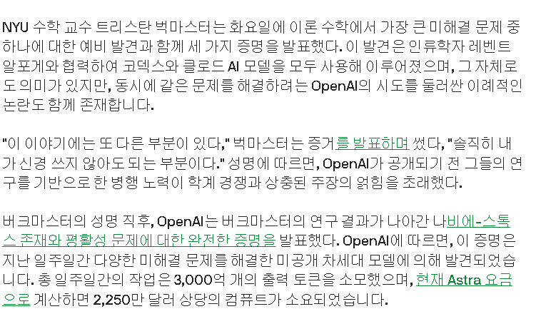

오픈 AI에서 공개한 밀레니엄 문제 풀이는 아래 게시물을 확인.
OAI 내부모델로 나비에-스토크스 (밀레니엄 문제) 해결
https://www.dogdrip.net/723682439

https://techcrunch.com/2026/09/08/openai-fought-dirty-on-career-making-math-problem-says-nyu-mathematician/
뉴욕대학교 수학 교수가 나비에-스토크스 방정식을 거의 풀어냈는데
이 과정에서 1년간 코덱스를 사용했던 거 같다.
그런데 이번에 오픈 AI에서 공개한 방정식 풀이 방법이
바로 뉴욕 수학 교수가 제창한 방식이었다는 모양.
여기에서 비공개로 기록해둔 데이터를 오픈 AI 측이
마음대로 열람하고 사용했다는 의혹이 불거진 상황이다.
교수 입을 틀어 막으려고 이것 저것 했다는 루머도 있는데,
이건 실체가 확인이 안 된 이야기.
도메인 네임 파는 애들이 자주 검색되는 인기 있는 도메인명 선점해서 비싸게 되팔이한다는 이야기 보고 AI 서비스도 사용자가 내는 아이디어 중에서 괜찮은 거 긴빠이하려나 했는데, 내가 스케일이 작았네ㅋㅋ